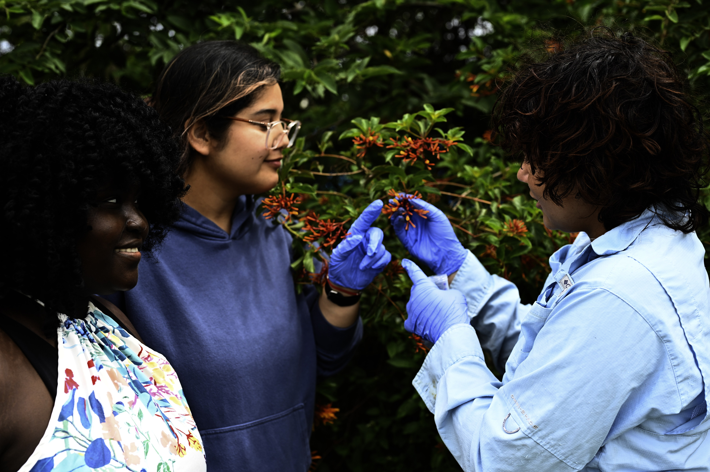
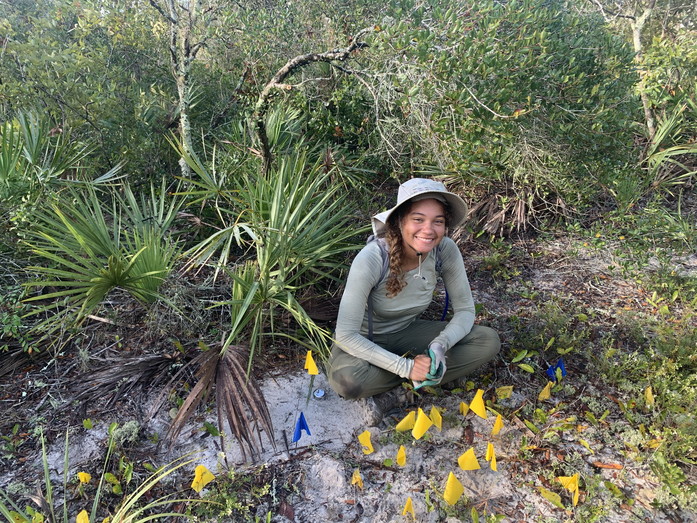
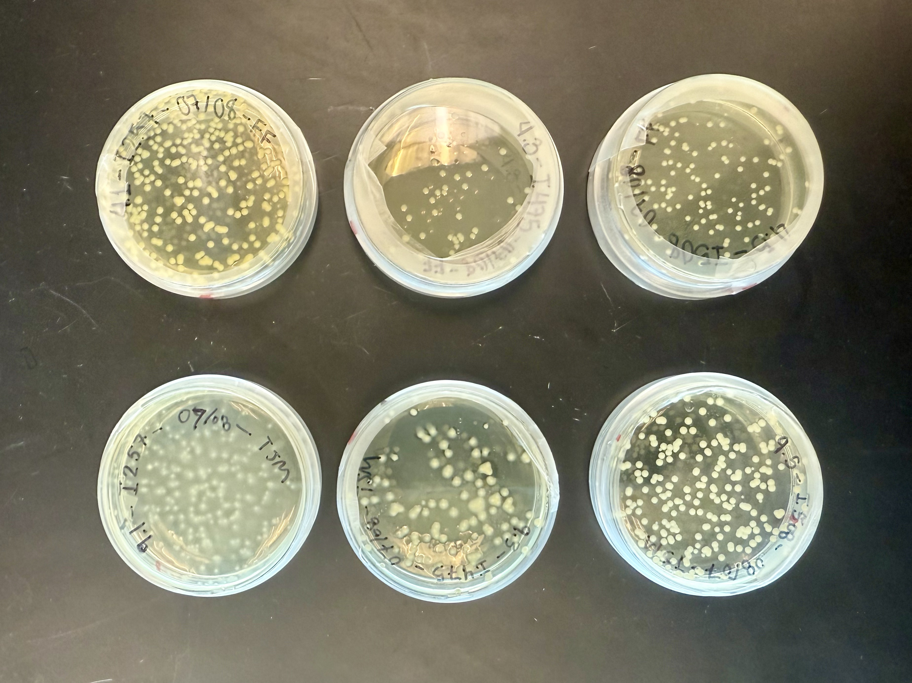
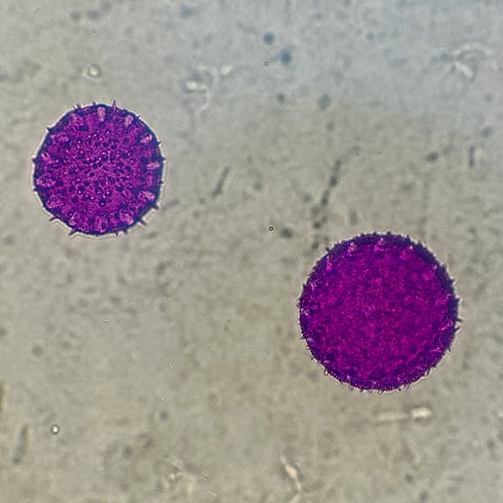
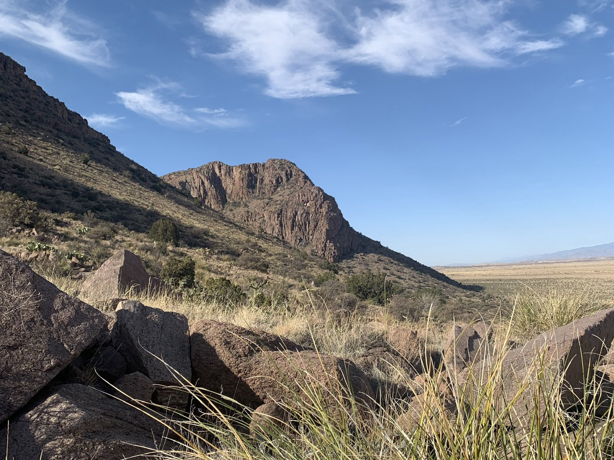

Antonia J. Millet
Plant–Microbe Interactions Pollination Ecology
Ph.D. Student in Integrative Biology Florida Atlantic University
About
My name is Antonia, but I go by Toni. I am an NSF Graduate Research Fellow , McKnight Doctoral Fellow , and WLW-ECOS Fellow at Florida Atlantic University (FAU), where I study the ecology of plant-associated microbiomes. My research asks how interactions that begin in one part of a plant shape outcomes elsewhere.
I began developing that perspective at Sevilleta National Wildlife Refuge as an undergraduate at Rice University, where I investigated how ants influenced the survival and reproduction of desert plants, and later through work on plant–microbe mutualisms across environmental gradients.
As lab coordinator in the Fernandes and Francis Labs at FAU, I brought those questions into pollination, floral microbiomes, and soil- and plant-associated microbial communities. With the help of my advisors Dr. Vanessa Moreira C. Fernandes and Dr. Jacob Francis , I now investigate how microbial interactions scale from individual tissues to whole plants and broader ecological communities.
Research
Whole-Plant Microbial Ecology

Planned doctoral research
Root-to-Flower Cascades
Root-associated microbes can influence plant physiology
beyond the tissues they inhabit. I test whether these
effects extend to flowers, reshaping floral traits,
microbial communities, pollinator behavior, and
reproduction.
Read project

Planned doctoral research
Root-to-Flower Cascades
Root-associated microbes can influence plant physiology beyond the tissues they inhabit. I test whether these effects extend to flowers, reshaping floral traits, microbial communities, pollinator behavior, and reproduction.
Read projectDistinct microbial communities in plant roots, leaves, and flowers perform important functions, ranging from mycorrhizal fungi that enhance nutrient uptake to yeasts that alter nectar and affect insect pollinators. Yet below- and aboveground microbiomes are often studied independently. As a result, we know relatively little about whether microbial interactions in one plant organ reshape the conditions under which communities assemble and function in another.
Root-associated microbes can alter plant nutrition, hormone signaling, metabolism, and immune responses. These changes may carry through the plant to affect floral traits, nectar chemistry, and floral microbiome assembly. Some links in this cascade are already established: mycorrhizal fungi, for example, can increase floral display and nectar sugar. However, the mechanisms driving these root-to-flower effects and their consequences for floral microbial communities remain unclear.
Using firebush (Hamelia patens; Rubiaceae), a shrub native to Florida, I will independently manipulate root and floral microbial communities. I will test whether belowground microbial colonization alters floral traits and microbiome assembly, then follow those changes through pollinator behavior and plant reproduction. By pairing these experiments with nectar chemistry and host and microbial gene-expression analyses, I aim to provide some of the first mechanistic evidence connecting root-associated microbes to floral function—a long-proposed relationship that has rarely been tested directly.

Manuscript in preparation
Whole-Plant Microbiome Assembly
I examine how microbiomes vary among plant organs,
individual hosts, and wild populations of an endangered
Florida scrub endemic, and whether that variation is
coordinated across the whole plant.
Read project

Manuscript in preparation
Whole-Plant Microbiome Assembly
I examine how microbiomes vary among plant organs, individual hosts, and wild populations of an endangered Florida scrub endemic, and whether that variation is coordinated across the whole plant.
Read projectRecovering endangered plants increasingly depends on establishing and maintaining viable populations, yet conservation efforts often proceed with little information about the microbial communities associated with wild plants. This gap may be especially important in Florida scrub, where plants recruit under dry, nutrient-poor conditions and population persistence depends on successful establishment after disturbance.
Using the federally listed scrub mint Dicerandra frutescens, I characterize bacterial and fungal communities across roots, leaves, flowers, fruits, and soil collected beside and away from focal plants in multiple wild populations. I ask how strongly these communities differ among plant compartments and sites, how much host-to-host variation occurs within sites, and whether the soil immediately surrounding a plant is more closely associated with its microbiome than soil farther away. I also test whether plants that differ in one compartment tend to differ in others, revealing whether microbiome differences are linked across the whole plant.
This work establishes a compartment-resolved microbiome baseline for a rare Florida endemic and identifies the spatial and biological scales at which microbial variation occurs. These patterns provide a foundation for future tests of how microbiomes relate to plant recruitment, population performance, and recovery.
Floral Ecology and Microbial Dispersal

Manuscript in preparation
Variation in Floral Microbe Dispersal
Microbial taxa may differ in their ability to disperse
between flowers. We quantify viable transfer across
successive pollinator contacts to test whether dispersal
acts as a taxon-specific filter on floral microbiome
assembly.
Read project

Manuscript in preparation
Variation in Floral Microbe Dispersal
Microbial taxa may differ in their ability to disperse between flowers. We quantify viable transfer across successive pollinator contacts to test whether dispersal acts as a taxon-specific filter on floral microbiome assembly.
Read projectPollinators are major vectors of floral microbes, but dispersal is often treated as though all microbes are carried between flowers in the same way. In reality, bacteria and yeasts differ in characteristics that may affect how readily they attach to pollinator mouthparts, survive transport, and detach during later flower visits. These differences could act as an early filter on floral microbiome assembly by determining which microbes reach new flowers in the first place.
Using a standardized assay with dissected bee tongues, we quantify the number of viable cells transferred across successive contacts for multiple bacterial and yeast isolates. We test whether dispersal efficiency differs between bacteria and yeasts, among microbial genera, and among isolates within the same genus. Transfer differed between yeasts and bacteria and among microbial taxa, including within genera. The experiment also revealed that tongue identity influences microbial transfer, showing that dispersal depends not only on microbial identity, but possibly also on characteristics of its vector.
Together, this work demonstrates that pollinator-mediated dispersal is not a uniform process. Differences among microbial taxa and pollinator mouthparts provide a mechanistic basis for understanding why some floral microbes may move more readily among plants while others remain uncommon or locally restricted.

Ongoing open-access resource
Florida Library of Pollen
FLiP combines microscopy, community-contributed samples,
and computer vision to build an open reference library for
identifying pollen collected across Florida.
Read project

Ongoing open-access resource
Florida Library of Pollen
FLiP combines microscopy, community-contributed samples, and computer vision to build an open reference library for identifying pollen collected across Florida.
Read projectPollen identification is essential for studying plant–pollinator interactions, but it often depends on specialized expertise and reference collections that are difficult to access.
The Florida Library of Pollen, or FLiP, is building an open, image-based reference library from pollen collected across Florida. The project combines community-contributed samples, microscopy, image annotation, and computer-vision tools to make pollen identification more accessible to researchers, educators, students, and the public.
I developed FLiP’s original instance-segmentation pipeline, which trains a computer-vision model to detect and delineate individual pollen grains in microscopy images. Because samples can be contributed by community members and images can be annotated remotely, FLiP also creates meaningful research roles for students who cannot always participate in traditional laboratory or fieldwork. The result is both a scientific reference collection and a model for how shared digital infrastructure can broaden participation in ecological research.
Contribute to FLiPMicrobial Function in Changing Environments

Ongoing collaborative research
Microbial Traits and Dryland Resistance
We investigate the physiological traits and gene-expression
responses that allow dryland microbes to withstand heat
and desiccation.
Read project

Ongoing collaborative research
Microbial Traits and Dryland Resistance
We investigate the physiological traits and gene-expression responses that allow dryland microbes to withstand heat and desiccation.
Read projectDryland soils depend heavily on microbial communities for nutrient cycling, soil stability, and recovery after disturbance. As heat and drought intensify, understanding why some microbes tolerate environmental stress better than others is increasingly important for predicting whether these ecosystems can resist further degradation.
Using cultured cyanobacteria and fungi from the Sevilleta National Wildlife Refuge, this collaborative project combines physiological experiments with gene-expression analyses to identify traits and molecular mechanisms associated with resistance to heat and desiccation. My contribution focuses on identifying microbial functions associated with stronger performance under stress.
These organism-level responses connect to broader experiments testing how microbial interactions and community composition influence the resistance and recovery of dryland soils. Together, this work aims to identify microbial assemblages that are better equipped to maintain soil health as drylands become hotter and drier.
Publications
View my publications, preprints, and citation record on Google Scholar.
View Google ScholarMentoring
My first opportunity in research came through a mentor at Sevilleta Field Station. I had no formal research experience and little free time, but my Sevilleta mentor took me on, helped me apply for fellowships, and treated me like a scientist. I have no doubt that I was a capable undergraduate, and I have no doubt that I have grown into a successful scientist. But that trajectory depended on a serendipitous, right-place-right-time moment. Someone held a door open.
Too many capable students never get that moment. Not because they lack ability or motivation, but because they work long hours, care for family, commute, manage health, or are expected to volunteer time they do not have. Those students do not need lower expectations. They need access.
That reality shapes how I mentor. I try to pair high expectations with the practical support students need to meet them. In the roles I hold now, I have helped establish two paid undergraduate research positions, supported student travel to a national scientific conference, developed shared resources such as the Florida Library of Pollen, and contributed to outreach through organizations like the Science Olympiad.